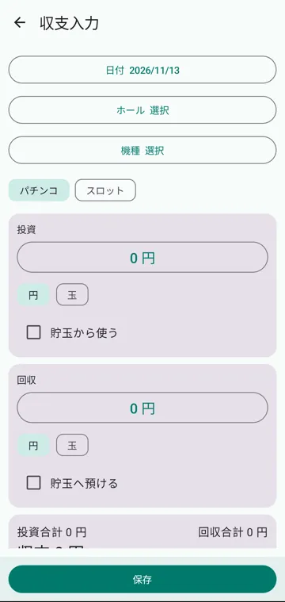
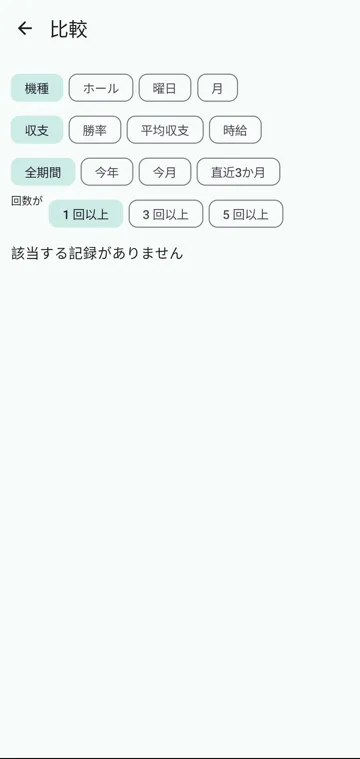
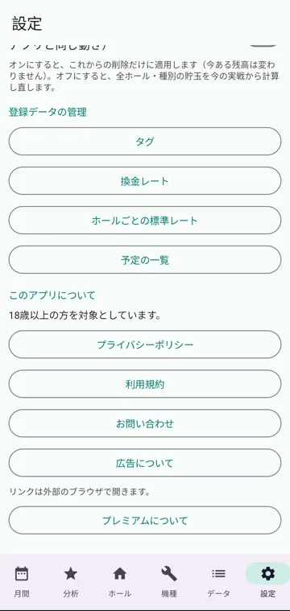

遊技収支ノート
パチンコ・パチスロの収支を、手軽に記録して振り返るための Android アプリです。18歳以上の方が対象です。
このアプリは遊技・賭け・換金の機能を持ちません。記録と集計のための道具です。
主な機能
- 日ごとの収支（投資・回収）の記録と、月・年の集計
- 機種・ホール・タグ別の分析とグラフ
- ホーム画面ウィジェット
- JSON によるバックアップと復元
- CSV の取り込み・書き出し
- 収支データは端末内に保存されます（詳細はプライバシーポリシー）
画面のイメージ



画面は開発中のものです（記録のない状態）。
プレミアム（買い切り）
広告の非表示などの追加機能を、1 回の購入で利用できる予定です。価格と内容は、公開時にお知らせします。